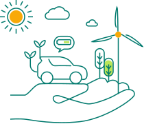

Introduction
People are increasingly conscious about making sustainable choices – from where we shop, to the food we eat, and our travel habits. These principles have started to play out in investment decisions as well.
The Schroders Global Investor Study 2020 surveyed more than 23,000 investors from 32 locations around the world and found that 77% of investors today refuse to compromise on their personal beliefs when investing, even if higher returns were on offer.
But before we dive into the essentials of sustainable investing, let’s answer a few questions:
1

Sustainable investing is only about protecting the environment
2
Sustainable investing is not the same as ethical investing
3
Sustainable investing means having to sacrifice on returns